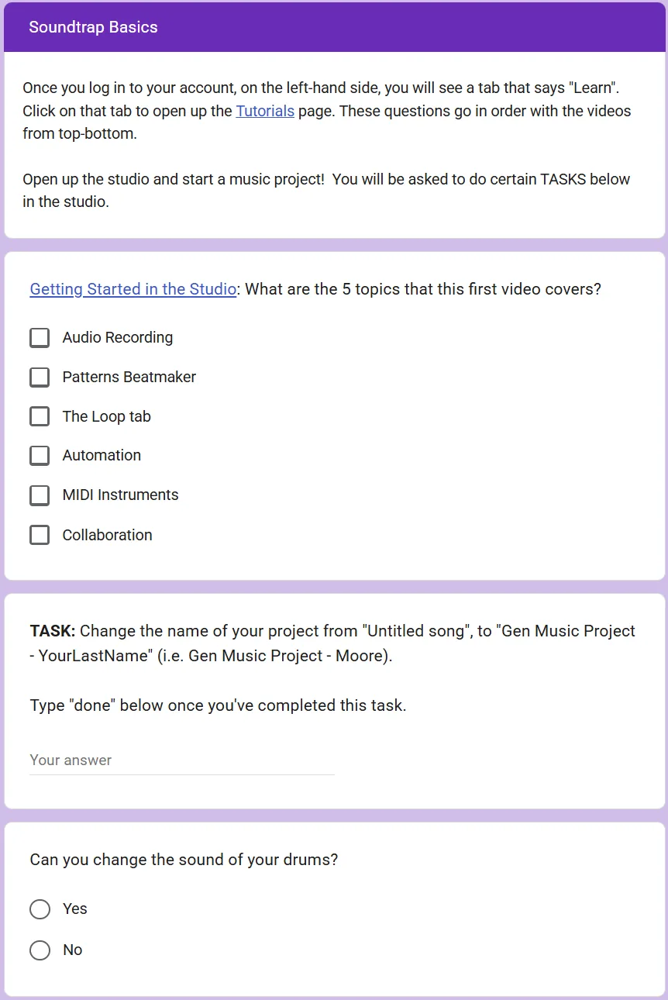
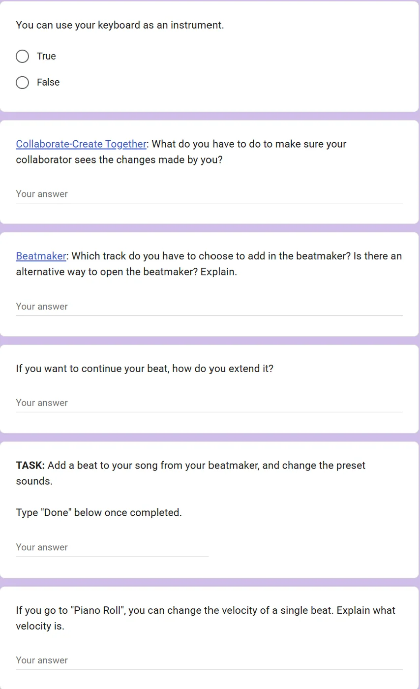
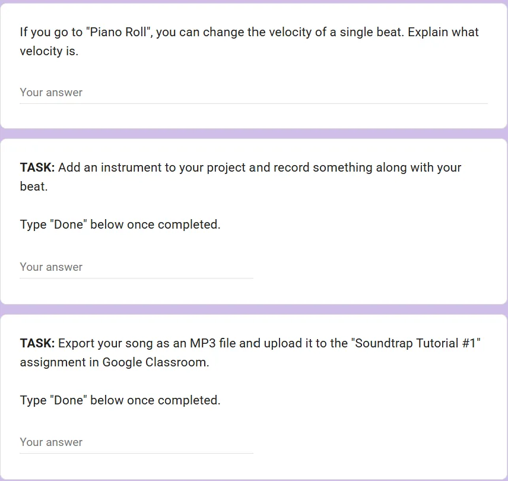
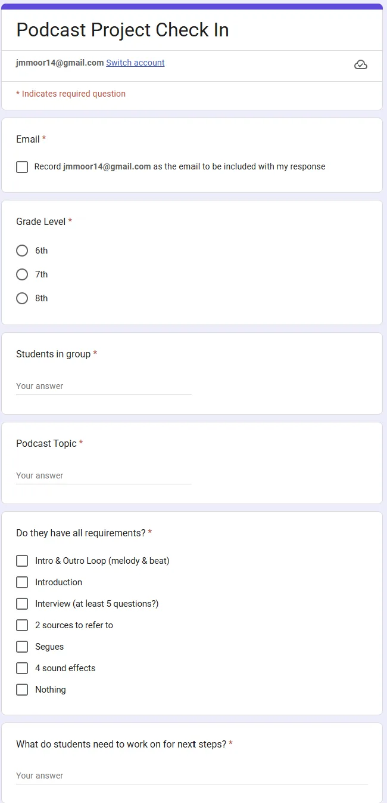

Artifacts
Evidence of the Learning System
Click any artifact to enlarge it.

Scaffolded onboarding experience for an unfamiliar digital audio platform.

Supported topic selection, interview planning, and script structure.

Progress-monitoring tool supporting accountability and project management.

Defined success criteria and aligned instruction to evaluation.

Encouraged reflection, revision, and evaluation against standards.